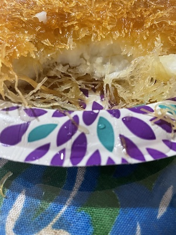
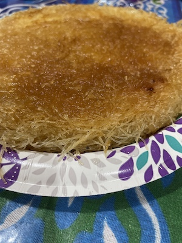
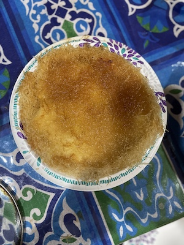

Easy and Tasty Kunafa Recipe !!!
There are many ways to make Kunafa.I will
be showing you guys the Eygption style Kunafa. Kunafa has originaly
started from Palestine but with a diffrent recipe. Then Eygptions
started making it in there own way. The recipe you will be learning
today has passed on in my family for many generations. From my
grandmother to my mom, sister,and now me!
Ingredients
- One box of qunnafa (kataifi)
- Two sticks of butter unsalted (melted)
Filling
- One cup milk
- Two tablespoons of corn starch
- One tsp of vanilla
Syrup
- One cup water
- One cup white sugar
- Two drops of lemon
Steps
- Syrup: mix the water with the sugar on
the stove on medium until it starts boiling. After the boiling put two
drops of lemon keep mixing until it becomes the texture of honey.
Leave until it cools down.
- Filling: mix the ingredients and put it
on the stove on meduim until it becomes thick. Leave it aside.
- Kunafa: cut the kunafa in small pieces,
mix it with the melted butter (mix it very well), get the pan, and put
a small amount of butter on the pan so the qunafa doesnn't stick. Put
half of the quanfa pack, then add all the filling (do not mix). Then
put the other half of the kunafa over the filling and put it in the
oven on 350 Fahrenheit for 30 minutes-1 hour. Keep checking on it and
take it out when it's a golden color. Once it's ready, take it out of
the oven and put it in a plate or any hard surface. (Lastly add the
syrup the qunafa is hot so the syrup cools it down)
Now that you are all done with your amazing masterpiece. Go ahead and share this delouse dessert recipe with your family and friends. Enjoy !!!
Final Results!!!
  
Recipe made by Hadeel Aiad and Dalia Laz. Website made by Hadeel Aiad.